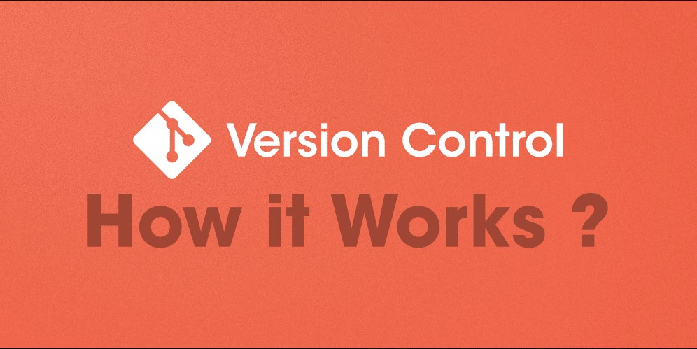

Essential Git Commands Every Software Developer Should Master for Version Control

Setup and Config Commands
git config
Purpose: Set user information, editor, and other settings.
- To set global username:
git config --global userName "Your Name"
- To set global email:
git config --global userEmail "your.email@example.com"
- To list all configuration settings:
git config --list
- To set vim as the default editor:
git config --global core.editor "vim"
- To set VSCode as the default editor:
git config --global core.editor "code --wait"
git help
Purpose: Provides help for Git commands.
- To get help for a specific command:
git help <command>
- To help with merge command, for example:
git help merge
- To list all available Git commands:
git help -a
Getting and Creating Projects
git init
Purpose: Initialize a new Git repository.
- To create a new repository:
git init <directory-name>
- To create a bare repository(for servers):
git init --bare
git clone
Purpose: Clone a remote repository to the local machine.
- To clone a repository:
git clone <url> <directory>
- To clone only the latest commit:
git clone --depth=1 <url>
Basic Snapshotting Commands
git add
Purpose: Stage changes to be committed.
- To add a specific file:
git add <file>
- To add all files:
git add .
- To add changes interactively in patches:
git add -p
git status
Purpose: Show the working tree status.
- To show the status of the working tree:
git status
- To show the status in short format:
git status -s
- To show ignored files:
git status --ignored
git diff
Purpose: Show changes between commits, branches, or the working tree.
- To show unstaged changes:
git diff
- To show changes changes staged for commit:
git diff --staged
- To compare between two branches:
git diff <branch1> <branch2>
git commit
Purpose: Record changes to the repository.
- To commit all staged changes with a message:
git commit -m "message"
- To modify the last commit:
git commit --amend
- To amend the last commit without changing the message:
git commit --no-edit
git reset
Purpose: Reset current HEAD to a specific state.
- To unstage a file:
git reset <file>
- To keep changes in the working directory:
git reset --soft <commit>
- To discard changes in the working directory:
git reset --hard <commit>
Branching and Merging Commands
git branch
Purpose: List, create, delete, or rename branches.
- To list all branches:
git branch
- To create a new branch:
git branch <branch-name>
- To delete a branch:
git branch -d <branch-name>
- To rename a branch:
git branch -m <old-branch-name> <new-branch-name>
- To show the current branch:
git branch --show-current
git checkout
Purpose: Switch branches or restore working tree files.
- To switch to a branch:
git checkout <branch-name>
- To create and switch to a new branch:
git checkout -b <branch-name>
- To discard changes in the working directory:
git checkout -- <file>
git merge
Purpose: Merge changes from one branch into another.
- To merge a branch into the current branch:
git merge <branch-name>
- To merge changes into the current branch but do not commit immediately:
git merge --squash <branch-name>
- To create a merge commit even if a fast-forward merge is possible:
git merge --no-ff
git rebase
Purpose: Move or combine commits onto a new base.
- To rebase the current branch onto another branch:
git rebase <branch-name>
- To rebase interactively to edit commit history:
git rebase --interactive
- To the rebase and reset to the original branch:
git rebase --abort
git stash
Purpose: Save changes temporarily without committing.
- To save changes with a message:
git stash save "message"
- To apply changes from the stash and remove it from the stash list:
git stash pop
- To list all stashes:
git stash list
Sharing and Updating Projects
git fetch
Purpose: Download objects and refs from a remote repository.
- To fetch changes from a remote repository:
git fetch origin
- To fetch all changes from all remotes:
git fetch --all
git pull
Purpose: Fetch and merge changes from a remote repository.
- To pull changes from a specific branch:
git pull origin <branch-name>
- To rebase the local branch with the upstream branch:
git pull --rebase
git push
Purpose: Push local changes to a remote repository.
- To push the current branch to origin:
git push origin <branch-name>
- To force push changes, overwriting history:
git push --force
git remote
Purpose: Manage remote repository connections.
- To add a remote repository:
git remote add <name> <url>
- To list all remote repositories/URLs:
git remote -v
- To remove a remote repository:
git remote remove <name>
git submodule
Purpose: Manage submodules in a Git repository.
- To add a submodule:
git submodule add <repository>
- To clone and initialize submodules:
git submodule update --init
- To show the status of submodules:
git submodule status
Inspection and Comparison Commands
git log
Purpose: Show the commit history.
- To show the commit history:
git log
- To show the commit history in one line:
git log --oneline
- To show a graphical representation of the commit history:
git log --graph
- To show the changes introduced in each commit:
git log -p
git show
Purpose: Show details of a commit or object.
- To show the details of a commit:
git show <commit>
- To show the details of the last commit:
git show HEAD
git diff
Purpose: Show changes between commits, branches, or working tree.
- To show unstaged changes:
git diff
- To show changes staged for commit:
git diff --staged
- To compare between two branches:
git diff <branch1> <branch2>
- To show only the names of changed files:
git diff --name-only
Patching Commands
git cherry-pick
Purpose: Apply changes from a specific commit.
- To apply a specific commit to the current branch:
git cherry-pick <commit>
- To abort an ongoing cherry-pick operation:
git cherry-pick --abort
git apply
Purpose: Apply a patch to the working directory.
- To apply from a patch file:
git apply <patch-file>
- To check if a patch can be applied cleanly:
git apply --check <patch-file>
Debugging Commands
git bisect
Purpose: Find the commit that introduced a bug.
- To start the bisect process:
git bisect start
- To mark a commit as good:
git bisect good <commit>
- To mark a commit as bad:
git bisect bad <commit>
git blame
Purpose: Show who made changes to each line of a file.
- To show changes by line in a file:
git blame <file>
- To limit the blame to a range of lines:
git blame -L <start>,<end> <file>
git grep
Purpose: Search for patterns in tracked files.
- To search for a pattern in the current branch:
git grep "pattern"
- To search for a pattern with line numbers for a match:
git grep -n "pattern"